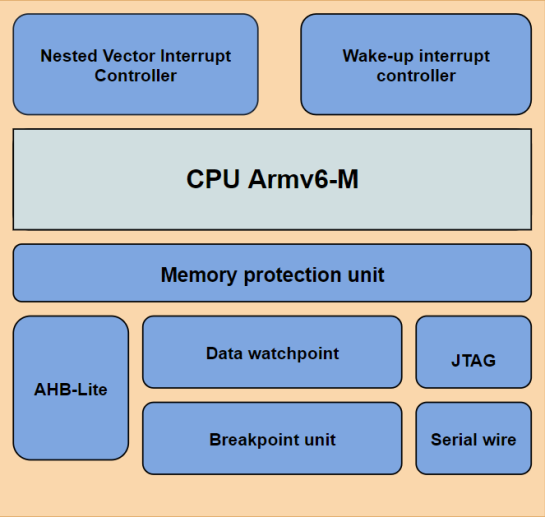
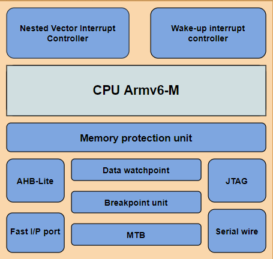
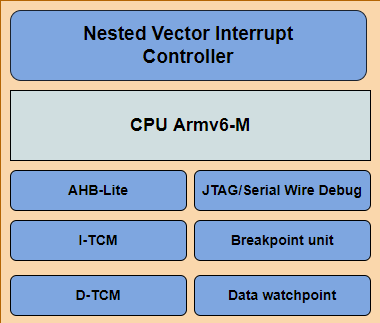
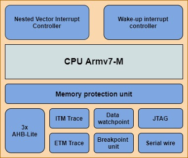
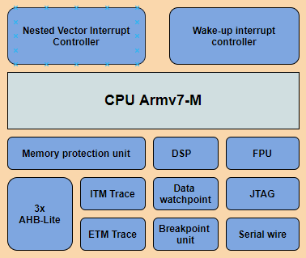
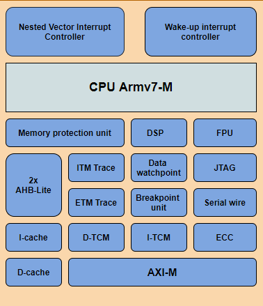
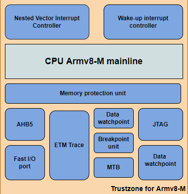
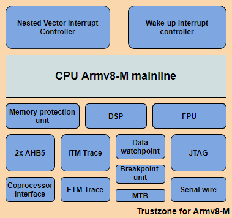
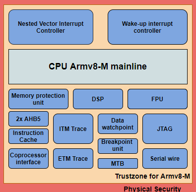
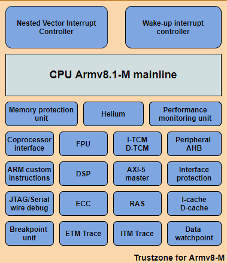

Introduction to ARM processors & its types and Overview to Cortex M series with deep explanation of each of the processors in this Family
ARM:
As predicted by Moore in his law, there is an increase in new technologies in every field, same way ARM has produced a number of processors by incorporating those new technologies resulting in good or even better processors with respect
to the intended type of applications. These processors are classified into three types based on the application domains that they come under,
Microcontroller Processors: These types of processors were normally designed to provide high performance by maximizing the energy efficiency in lower silicon area. Usually these processors have lower maximum frequency (less than 200MHz
and some will be beyond that) till now Cortex M series is one of the best examples for this type because of its ease of use that were intended deeply for embedded systems.
Real-time Processors: These types of processors are designed for high performance in real-time applications such as Heart pacemaker, Hard disk controller, Airline Traffic Control Systems etc.., Most of these won’t contain Memory Management
Unit(MMU) instead they have Memory Protection Unit(MPU) and of-course other features for industrial applications. They can work at a moderate clock frequency (200MHz to less than 1GHz). The response latency is very low. Many small Real Time
Operating Systems(RTOS) can be used with this type of processor but full versions of large OS like Windows or Linux are not supported.
Application Processors: These types of processor are for high end purposes including servers most commonly smartphones and mobile computing. They operate at higher clock frequencies (More than 1GHz). It supports MMU, which results in the
use of full version OS like Windows, Android, Linux
Cortex-M Series
This series is mostly focused on obtaining inexpensive and energy-efficient microprocessors. These processors are designed for microcontrollers that can be utilized in a range of applications, including the Internet of Things, embedded
systems, industrial applications, and daily consumer products.
Cortex-M0

It is the first processor in this series, which was built using a small silicon area that is able to operate in low power. The instruction set was composed of only 56 instructions where most of the instructions were 16 bits,
however registers and the data are operated in 32 bits. It enables to achieve 32 bit processes in just 8bit price range. It is composed of a low gate count starting from 12k gates. Click Here for more Information
Cortex-M0+

As a result of the success of the M0 processor in the industry M0+ had been introduced. The same instruction set and tool compatibility as the M0 CPU, but with lower energy consumption and higher performance than the M0 processor.
Click Here for more Information
Cortex-M1

It was the first processor that was designed mainly for Field Programmable Gate Arrays (FPGA). Therefore, the targeted audience were those who wanted FPGA devices, as it also contains FPGA synthesis tools which allows the
user or designer to choose their processor with reduced implementation for their project. It has a low gate count. Click Here for more
Information
Cortex-M3

It was developed mainly by considering producing a processor with increased performance in the low cost range. It includes low interrupt latency, low cost debug and low gate count that operates in low power. As previously
said, it was designed primarily for embedded applications that demand quick interrupt requests. Click Here for more Information
Cortex-M4

It consists of the same functionality and the features of M3 in addition to that some features and the functionality has been introduced. It operates with low power, low interrupt latency, low cost debug and low gates count.
One of the most important features that was introduced is this is Floating Point Unit (FPU); it is an optional. It was created to meet the needs of digital signal processing, which required a processor that could combine control and
signal processing in an easy-touse manner. Demanded industries are automotive, Power management, motor control, embedded audio and industrial automation markets. Both the M4 processor without FPU and the M4 processor with FPU are designed
specifically for embedded applications that demand quick interrupt response. Click Here for more Information
Cortex-M7

It is the processor with the highest performance in the M series, approximately double the performance provided by the M4. This processor enables the designing of sophisticated Memory Control Unit and System on Chip. It provides
industry-leading scalar performance of 5.01 CoreMarks/MHz while keeping the Armv7-M architecture's great responsiveness and ease of use. From this processor onwards the instructions and the data buses are increased to 64 bits rather
than 32 bits. With the built in instructions, Tightly Coupled Memories and data caches this superscalar processor never slows down its performance, even during high end computation and most demand application processing. Click Here for more Information
Cortex-M23

It is a relatively small CPU, and has the TrustZone feature which is appropriate for most limited Embedded applications and IoT while security is a critical parameter. TrustZone for ARM8-M is a feature that can be used to
assign or specify the trusted and untrusted applications running on them. Click Here for more Information
Cortex-M33

It is the first processor that was built based on ARM8- M Architecture. It has a low gate count and is energy efficient. The performance has improved over 20% compared to the M4. It is best for IoT markets and embedded systems
especially due to the security issues that were increasing due to interconnection of more things with the internet. Click Here for
more Information
Cortex-M35P

It is built using ARM8-M Architecture, that has software isolation security feature in addition to that it has a special feature called physical security feature. It is one of the high performance processor, which is developed
using billions of System on chips. It makes both physical and software security features available to developers. Click Here for
more Information
Cortex-M55

It is a fully synthesizable, microcontroller class and mid-range processor that implements ARM8-M.1 architecture. It supports M-profile Vector Architecture which is known as Arm Helium Architecture. It is one of ARM's most
AI capable processors and only one from Cortex-M series, which provides energy efficient Digital Signal Processing and Machine Learning Performance. While maintaining low power consumption it provides high computation performance across
scalar and vector operations. Click Here for more Information